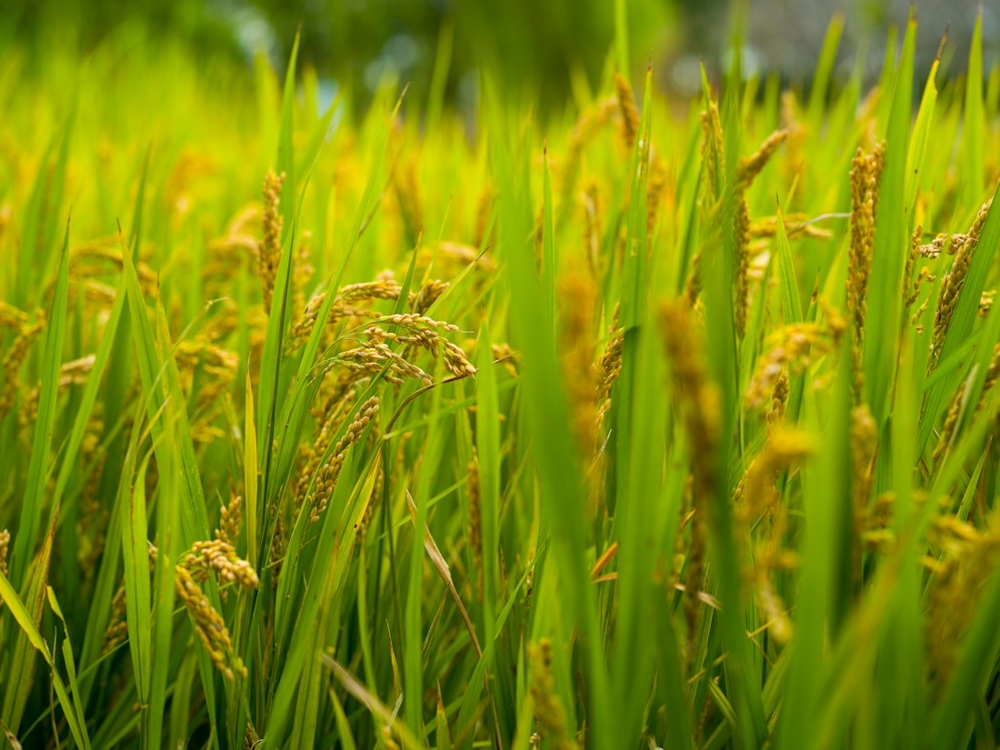
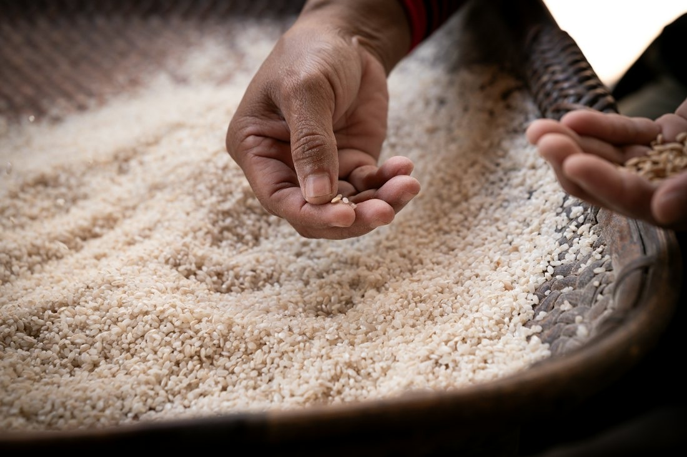
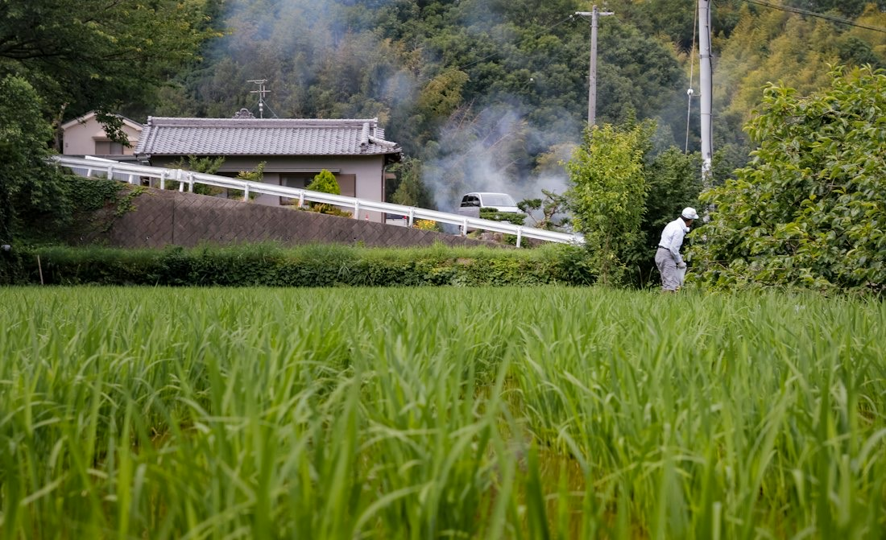
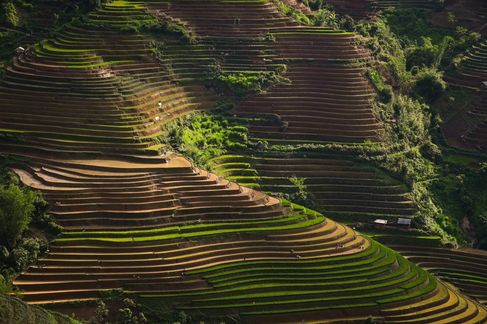

魚沼産コシヒカリ
新潟県認証の特別栽培米です。
魚沼産コシヒカリ・棚田米 新潟県十日町市松之山
新潟県認証特別栽培の「魚沼産コシヒカリ」を、松之山の棚田から産地直送でお届けしています。
魚沼産コシヒカリ・棚田米 新潟県十日町市松之山
新潟県認証特別栽培の「魚沼産コシヒカリ」を、松之山の棚田から産地直送でお届けしています。
冬
雪
越後松之山は、毎年3m以上も雪が降る豪雪地帯です。
棚田の3Dイメージです。実際の地形とは異なります
農業は天候に左右される仕事なので、毎年同じようにはいきません。それでも、豊作になっても不作になっても、そのときなりに皆様と分かち合いながら、中山間地農業への取り組みを続けてまいります。
令和6年1月1日から、滝沢徹也が代表を務めています。

新潟県認証の特別栽培米です。

無洗米仕上げや密封袋のオプションもあります。

新米をお召し上がりいただいた方への、限定のサービスです。

価格は現在のホームページの表示をもとにしています。
| ご注文 | ショップページ・お電話・FAX・メールで |
|---|---|
| 農繁期 | お電話に出られない場合があります |
ご注文はショップページ、お電話・FAX・メールで承ります。